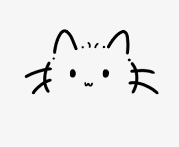

AI writing editor for WeChat creators
写作猫先学习你的旧文章，再用三段试写校准风格，最后把新材料写成一篇有你影子的公众号文章。
Prototype
等待输入历史文章
Step 1
写作猫会先生成三个短样例，让你选择更像你想要的方向。
Step 2
不用判断哪段“最好”，只要选哪段更接近你想要的方向。
Step 3
Step 4
Step 5
更像我
写得更好
How it works
粘贴 3-10 篇旧文章。
从三段样例里选一个方向。
保留你的表达习惯。
确认结构后生成文章。